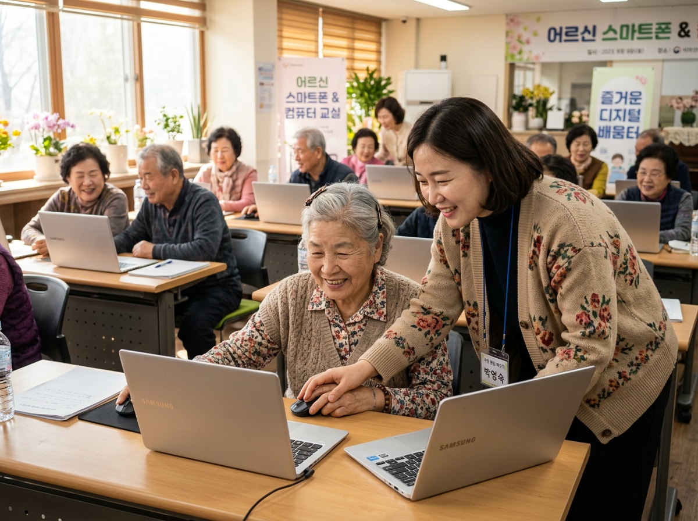
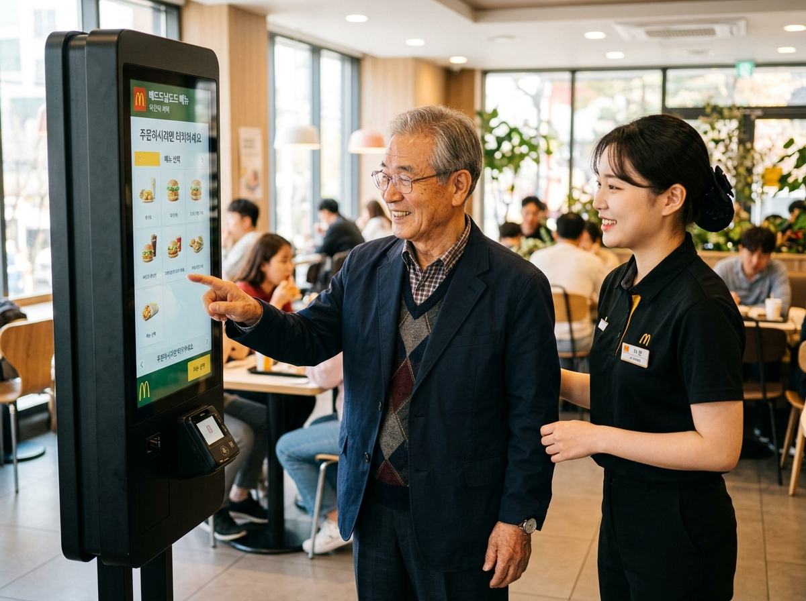
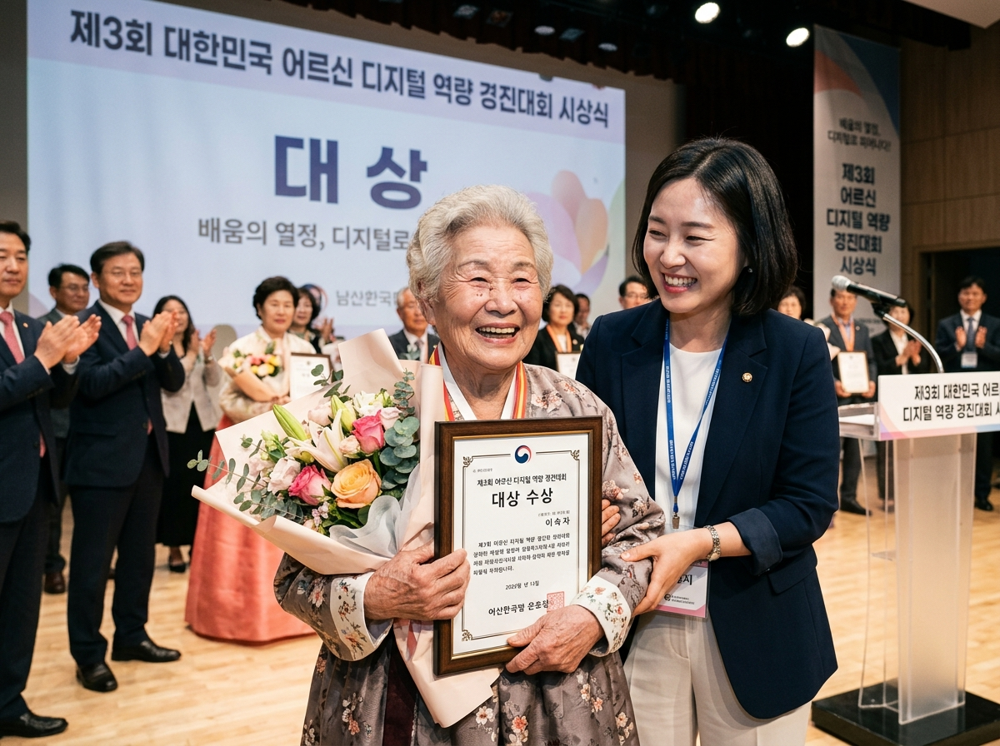
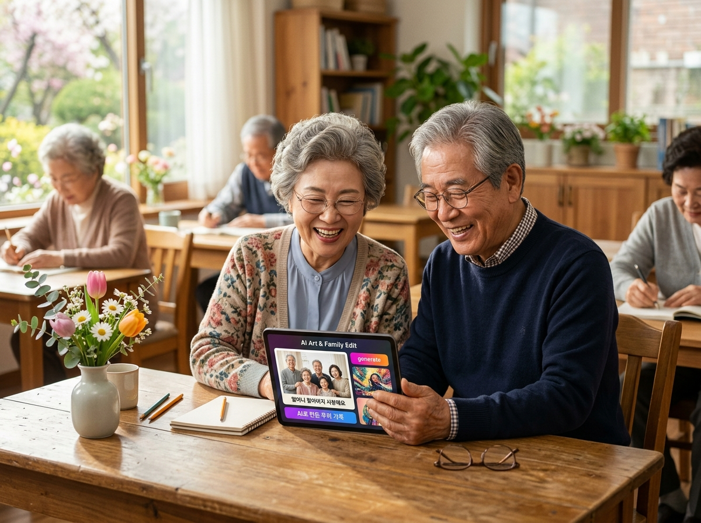
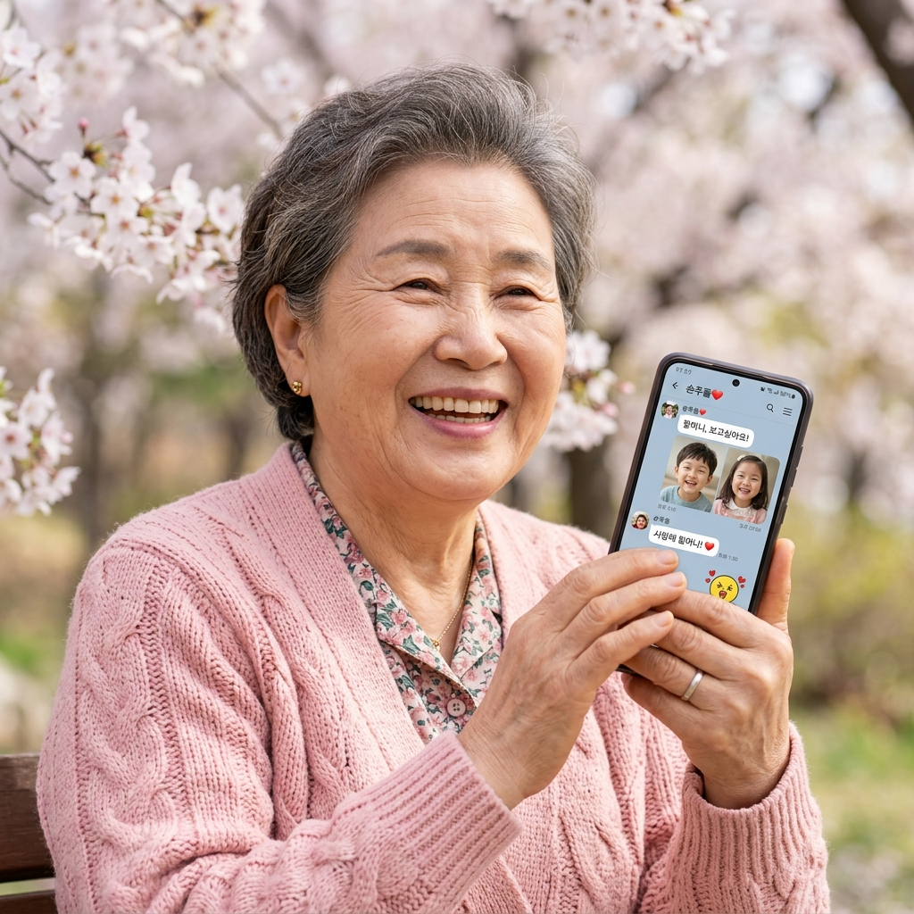
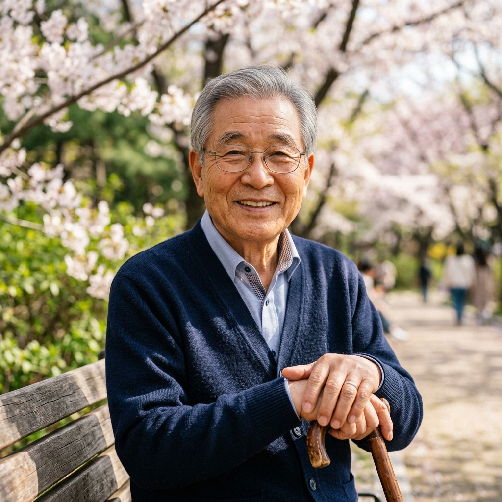

어르신들의 세상과
디지털 세상을 잇는
따뜻한 봄날의 선생님
"컴퓨터와 스마트폰이 낯설고 두려우셨나요?
인생의 깊은 경륜을 담아, 가장 친절하고 다정한 눈높이로
여러분의 손을 잡고 디지털 세상의 봄길을 함께 걷겠습니다."
“한 번 물어보신 것을 백 번 물어보셔도 늘 봄 햇살처럼 환하게 웃으며 알려드립니다.”
심 봄 날 (Shim Bom-nal)
시니어 전문 IT 라이프 & 디지털 소통 강사
"배움에는 늦은 때가 없습니다.
디지털을 만나 다시 피어나는 어르신들의 빛나는 두 번째 봄날을 응원합니다."
나이가 들수록 더 깊어지는
시니어 강사의 성숙 로드맵
젊은 시절의 열정을 넘어, 나이가 더해질수록 풍부해지는 삶의 지혜와 깊은 공감력으로
세대를 잇는 최고의 시니어 IT 멘토로 끊임없이 진화합니다.
시니어 IT 교육의 첫걸음과 눈높이 교수법 연구
“어려운 외래어와 영어를 어르신들의 다정한 우리말로 바꾸는 노력”
- 시니어 디지털 정보 격차의 심각성을 절감하고 전문 강사로 전향
- 복지관 및 경로당 무료 컴퓨터 기초 봉사수업으로 현장 경험 축적
- 글자 크기가 크고 따라하기 쉬운 『큰 글씨 스마트폰 첫걸음』 자체 교재 집필
- 반복 질문에도 지치지 않는 '무한 다정 교수법' 원칙 확립
지자체 핵심 명강사 & 디지털 자립 생태계 구축
“키오스크 앞에서 당당해진 어르신들의 미소를 볼 때 가장 행복합니다”
- 전국 시·군·구 평생학습관, 노인복지관 연간 300회 이상 초빙 명강사 등극
- '실생활 무인 키오스크 정복 챌린지' 기획 (패스트푸드, 병원, KTX 현장 실습)
- 유튜브 채널 『봄날의 컴퓨터 교실』 운영 (구독자 10만 어르신들의 랜선 선생님)
- 보이스피싱 및 스미싱 예방을 위한 '시니어 안전 스마트폰 지킴이' 양성
세대 공감 디지털 멘토 & 은빛 문화 저술가
“최첨단 인공지능도 결국 사람의 온기와 사랑을 전하는 도구입니다”
- 인생의 경륜과 생성형 AI(ChatGPT, 음성 비서)를 접목한 감성 IT 교육 선도
- 손주와 조부모가 함께 어울리는 '세대공감 디지털 페스티벌' 총괄 디렉터
- 시니어 디지털 정보 격차 해소 공로로 정부 훈장 및 평생교육 대상 수상
- 에세이 『은빛 청춘, 마우스로 봄날을 그리다』 출간 및 전국 릴레이 강연
두려움은 설렘으로, 일상은 편리하게!
봄날의 시니어 교육과정
기초부터 최신 인공지능까지, 어르신들의 생활 속 꼭 필요한 기능만 쏙쏙 골라
실습 위주로 재미있고 쉽게 가르쳐 드립니다.
스마트폰 & 무인 키오스크 완전 정복
터치가 두려우셨던 분들도 단 4주 만에 병원 예약, KTX 승차권 예매, 햄버거 주문까지 척척 해내는 생활 밀착형 실습 과정입니다.
🌸 주요 학습 내용
- 글자 크기 키우기 & 보기 편한 화면 설정
- 카카오톡 사진·동영상 전송 및 보이스톡
- 병원 진료 접수, KTX/고속버스 예매 실습
- 패스트푸드점 및 무인민원발급기 키오스크 실전
실생활 컴퓨터 & 안전한 인터넷 라이프
컴퓨터 켜고 끄기부터 안전한 온라인 쇼핑, 정부24 민원서류 발급, 금융사기 예방까지 똑똑하고 안전한 인터넷 활용법을 배웁니다.
🌸 주요 학습 내용
- 마우스 클릭/더블클릭 완벽 마스터
- 한글 문서 작성 및 예쁜 가족 초대장 만들기
- 주민등록등본 등 인터넷 민원 서류 무료 발급
- 스미싱·보이스피싱 판별 및 안전한 금융 관리
시니어 AI 친구 만들기 (생성형 AI 기초)
말 한마디로 질문하고 답을 얻는 챗GPT와 음성 비서를 활용하여, 내 말동무가 되어주고 일상을 도와주는 똑똑한 인공지능 친구를 만납니다.
🌸 주요 학습 내용
- 스마트폰 음성 비서(빅스비, 시리)로 전화걸기/알람
- 챗GPT와 대화하며 옛날 노래 가사 찾기
- AI로 손주를 위한 맞춤 동화책 및 시 짓기
- 인공지능으로 여행 계획 및 건강 식단 추천받기
스마트폰 인생 사진전 & 영상 앨범 제작
사랑하는 가족과 꽃구경 사진을 예쁘게 보정하고, 감동적인 배경음악과 자막을 넣어 세상에 단 하나뿐인 인생 동영상을 만듭니다.
🌸 주요 학습 내용
- 스마트폰으로 인생 사진 잘 찍는 구도와 비결
- 주름 쏙 지우고 화사하게 만드는 사진 보정법
- 음악과 함께 흘러가는 가족 앨범 영상 제작
- 가족 단톡방에 자랑하고 유튜브에 추억 남기기
웃음꽃 피어나는
강의 현장과 빛나는 활약상
복지관, 도서관, 주민센터에서 어르신들과 함께 호흡하며 만들어가는
가장 따뜻하고 감동적인 실제 현장 순간들을 전합니다.

복지관 강의 2026. 05종로노인종합복지관 스마트폰 200% 활용 교실
40분의 어르신들과 함께한 8주간의 열정적인 수업! 강사님이 어르신의 손을 따뜻하게 잡고 마우스 사용법을 밀착 지도하며 전원 수료를 달성했습니다.

현장 챌린지 2026. 06두려움 제로! 도심 속 키오스크 실전 체험단 출동
강의실을 벗어나 인근 매장과 역사를 직접 방문하여, 어르신께서 스스로 메뉴를 선택하고 결제까지 완료하며 환한 미소를 지으셨습니다.

전국 경진대회 2026. 07전국 시니어 디지털 경진대회 최우수 지도자상 수상
봄날 강좌를 수강하신 78세 이숙자 어르신께서 디지털 부문 대상을 차지하시며, 헌신적인 지도 공로를 인정받아 최우수 지도자상을 함께 수상하였습니다.

AI 특강 2026. 08평생학습관 특강: '생성형 AI로 그리는 나의 가족 앨범'
최신 태블릿과 AI 도구를 활용해 어르신 부부께서 사랑하는 가족들의 사진을 예술 작품으로 변환하고 자서전을 엮어내는 감동의 프로젝트입니다.
“선생님 덕분에 제 삶에
다시 봄날이 찾아왔습니다”
새로운 배움으로 세상과 다시 소통하게 된 수강생 어르신들의 진솔한 손편지입니다.
"자식들한테 물어보면 바쁘다고 눈치 보여서 속상했는데, 심봄날 선생님은 똑같은 걸 10번 여쭤봐도 늘 웃으면서 제 손을 잡고 알려주셨어요. 이제는 병원 예약도 혼자 척척 하고 손주들에게 카톡으로 예쁜 꽃사진을 보냅니다."

"젊은 애들만 가는 줄 알았던 패스트푸드점에 가서 키오스크로 불고기버거 세트를 혼자 주문해서 먹던 날, 가슴이 벅차서 눈물이 핑 돌았습니다. 선생님 덕분에 세상 밖으로 당당하게 걸어 나왔습니다."

"인공지능 챗GPT로 손주들에게 들려줄 옛날이야기를 쓰고, 스마트폰 영상으로 사진첩을 만들어 가족방에 올렸더니 손주들이 '우리 할머니 최고 멋쟁이'라고 난리가 났네요! 정말 고맙습니다."
함께 걸어갈 배움의 길,
언제든 다정하게 문의해 주세요
복지관, 평생학습관, 지자체, 도서관 등의 맞춤형 출강 의뢰 및 응원의 메시지를 환영합니다.
🌸 출강 및 교육 상담 신청
기관명과 희망하시는 교육 과정을 남겨주시면, 따뜻하고 정성을 다해 상세히 상담해 드립니다.
📝 봄날 응원 방명록
수강생 여러분과 방문해 주신 모든 분들의 따뜻한 마음을 나눕니다.